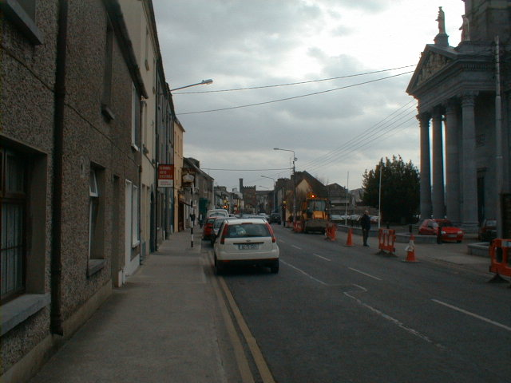
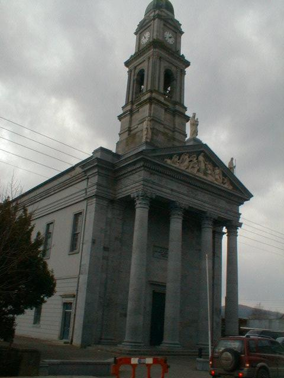

Irishtown
Irishtown was built outside the town walls by the Native-Irish in Medieval times. The Irish-Natives were compelled to live outside the town walls. They were only allowed into the town during the day to trade or work and had to leave the town by night fall so that the gates could be closed behind them.

St. Mary's Church Irishtown Clonmel was built in 1837-1850. It's steeple and portico were built in 1875-1890. It has a stucco ceiling and an expensive altar designed by the English Architect George Goldie. A monument (1615) of John Fitz-Geoffrey White, first Major of Clonmel may be seen inside.
